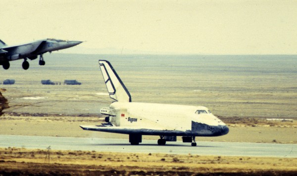
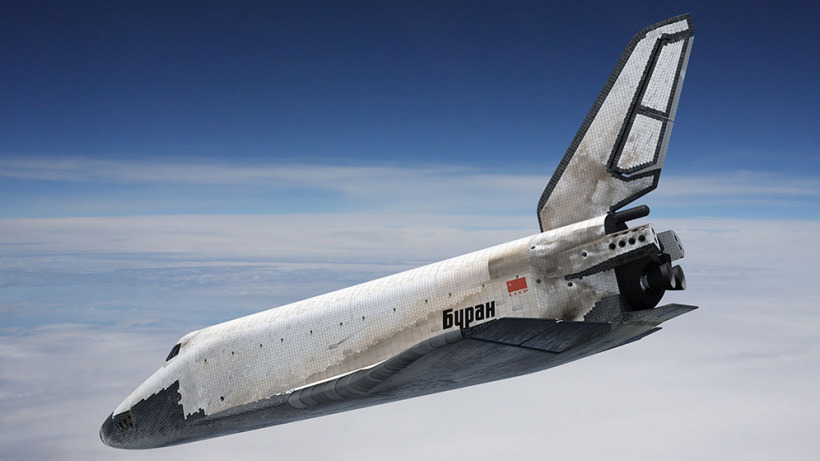

Продажа космических кораблей > Купить космический корабль
«Буран» — советский орбитальный корабль-ракетоплан многоразовой транспортной космической системы (МТКС), созданный в рамках программы «Энергия — Буран».
Проект многоразовой космической системы «Энергия-Буран» стал вершиной развития советской космонавтики, итогом десятилетий работы космической отрасли целой страны. И если в других этапных событиях в покорении космоса две супердержавы США и СССР шли, что называется, «ноздря в ноздрю», то автоматическую авиационную посадку многоразового корабля американцы смогли повторить только в 2000-е годы и то в гораздо меньших масштабах.
«Буран» предназначался для:
выведения на орбиты, обслуживания на них и возвращения на Землю космических аппаратов, космонавтов и грузов;
проведения военно-прикладных исследований и экспериментов по обеспечению создания больших космических систем с использованием оружия на давно известных и недавно изученных физических принципах;
решения целевых задач в интересах народного хозяйства, науки и обороны;
комплексного противодействия мероприятиям вероятного противника по расширению использования космического пространства в военных целях.


Покупка!